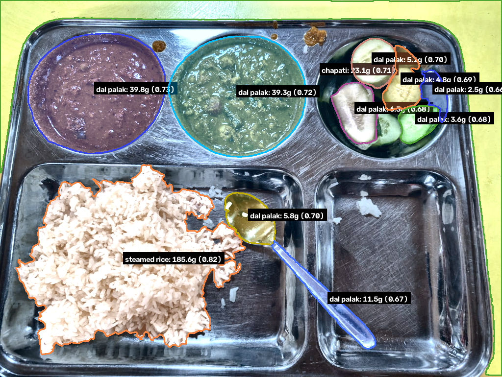

{
"resolution": "1600x1204",
"channels": 3,
"dtype": "uint8",
"expected_items": [
"steamed rice",
"dal palak",
"chapati"
],
"plate_profile": "standard_mess_thali",
"debug": false
}
{
"food_items": [
{
"name": "steamed rice",
"volume_ml": 172.0,
"mass_g": 185.6,
"calories": 241.3,
"protein": 5.0,
"carbs": 52.0,
"fat": 0.6,
"confidence": 0.8245,
"class_label": "steamed rice",
"class_confidence": 0.7029,
"top_k": [
{
"label": "steamed rice",
"confidence": 0.6878,
"raw_similarity": 0.1206
},
{
"label": "chapati",
"confidence": 0.18,
"raw_similarity": 0.0208
},
{
"label": "dal palak",
"confidence": 0.1323,
"raw_similarity": -0.0271
}
],
"identification_status": "uncertain",
"menu_match": false,
"matched_menu_item": null,
"identification_confidence": 0.7029,
"segmentation_confidence": 0.9393,
"association_confidence": 0.0,
"menu_match_confidence": 0.0,
"depth_confidence": 1.0,
"scale_confidence": 0.7
},
{
"name": "chapati",
"volume_ml": 27.4,
"mass_g": 23.1,
"calories": 60.1,
"protein": 1.8,
"carbs": 11.6,
"fat": 0.7,
"confidence": 0.7083,
"class_label": "steamed rice",
"class_confidence": 0.3766,
"top_k": [
{
"label": "steamed rice",
"confidence": 0.447,
"raw_similarity": 0.0363
},
{
"label": "chapati",
"confidence": 0.3337,
"raw_similarity": 0.0158
},
{
"label": "dal palak",
"confidence": 0.2193,
"raw_similarity": -0.0285
}
],
"identification_status": "uncertain",
"menu_match": false,
"matched_menu_item": null,
"identification_confidence": 0.3766,
"segmentation_confidence": 0.9546,
"association_confidence": 0.0,
"menu_match_confidence": 0.0,
"depth_confidence": 1.0,
"scale_confidence": 0.7
},
{
"name":[
{
"step": "Input",
"message": "Original image saved",
"params": {
"resolution": "1600x1204"
},
"elapsed_s": 0.0864,
"input_file": null,
"output_file": "original.png",
"timestamp": "2026-11-01T17:13:51.033495"
},
{
"step": "Pipeline",
"message": "Step 1 — Preprocessing & Perspective Warp",
"params": {},
"elapsed_s": null,
"input_file": null,
"output_file": null,
"timestamp": "2026-11-01T17:13:51.033571"
},
{
"step": "Quality Gate",
"message": "PASS",
"params": {
"blur_score": 351.14,
"tilt_deg": 25.0
},
"elapsed_s": null,
"input_file": null,
"output_file": null,
"timestamp": "2026-11-01T17:13:51.120523"
},
{
"step": "Preprocessing",
"message": "Complete",
"params": {
"output_size": "1024x770"
},
"elapsed_s": 0.2661,
"input_file": null,
"output_file": null,
"timestamp": "2026-11-01T17:13:51.299691"
},
{
"step": "Pipeline",
"message": "Step 2 — Compartments & Scale",
"params": {},
"elapsed_s": null,
"input_file": null,
"output_file": null,
"timestamp": "2026-11-01T17:13:51.299898"
},
{
"step": "Scale Calibration",
"message": "Fallback to bbox-based calibration",
"params": {
"cm_per_pixel": 0.03559,
"method": "bbox"
},
"elapsed_s": null,
"input_file": null,
"output_file": null,
"timestamp": "2026-11-01T17:13:51.313043"
},
{
"step": "Compartment Detection",
"message": "Scale computed",
"params": {
"cm_per_pixel": 0.03559,
"pixel_area_cm2": 0.00126671,
"compartments": 0,
"scale_confidence": 0.7
},
"elapsed_s": 0.0113,
"input_file": null,
"output_file": null,
"timestamp": "2026-11-01T17:13:51.313224"
},
{
"step": "Pipeline",
"message": "Step 3 — Depth Estimation",
"params": {},
"elapsed_s": null,
"input_file": null,
"output_file": null,
| Step | Message | Params | Time |
|---|---|---|---|
| Input | Original image saved | {"resolution": "1600x1204"} | 0.0864s |
| Pipeline | Step 1 — Preprocessing & Perspective Warp | — | — |
| Quality Gate | PASS | {"blur_score": 351.14, "tilt_deg": 25.0} | — |
| Preprocessing | Complete | {"output_size": "1024x770"} | 0.2661s |
| Pipeline | Step 2 — Compartments & Scale | — | — |
| Scale Calibration | Fallback to bbox-based calibration | {"cm_per_pixel": 0.03559, "method": "bbox"} | — |
| Compartment Detection | Scale computed | {"cm_per_pixel": 0.03559, "pixel_area_cm2": 0.00126671, "compartments": 0, "scale_confidence": 0.7} | 0.0113s |
| Pipeline | Step 3 — Depth Estimation | — | — |
| Depth Estimation | Complete | — | 19.3132s |
| Pipeline | Step 4 — Segmentation | — | — |
| Segmentation | 11 food items found | — | 60.2135s |
| Pipeline | Step 5 — Food Classification (OCR-constrained) | — | — |
| Classification | Complete | {"n_items": 11, "ocr_labels_used": true} | 2.9650s |
| Pipeline | Step 6 — Hungarian Label Assignment | — | — |
| Pipeline | Step 7 — Volume & Mass Estimation | — | — |
| Volume Estimation | Computed mass for 11 items | {"total_items": 11} | 0.0698s |
| Pipeline | ✅ Pipeline complete | {"total_food_items": 11, "avg_confidence": 0.7061, "scale_method": "bbox"} | 83.1396s |